2020年1月11日
Linked Open Data チャレンジ 2020 実行委員会
【開催報告】LODチャレンジ2020
オンライン授賞式シンポジウム
2020年12月20日（土）、Linked Open Data チャレンジ 2020 実行委員会は LODチャレンジ2020オンライン授賞式シンポジウム を開催いたしました。
LODチャレンジ2020の受賞作品の表彰を行うとともに、受賞者の方々による作品紹介や技術解説が行われました。
初のオンライン授賞式であるにも関わらず、多数の皆様にご参加頂き、企業活動や研究、シビックテック活動や個人での活動等においてデータを活用した様々な取り組みを進められてきた皆様に交流を深めて頂きました。
当日のプログラム等の詳細はこちら、受賞作品一覧はこちらをご覧ください。
表彰及び受賞者による作品紹介
最優秀賞
オントロジー賞（スポンサー賞：オントロノミー合同会社様より提供）
| 作品名 | 超臨場SDM方式収録データセット |
|---|---|
| 応募者名 | 加藤 慎、曽根 卓朗、新 麗、川村 地平、井口 和真、塚田 学 |

 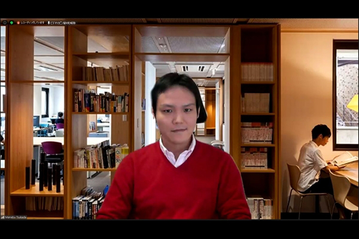
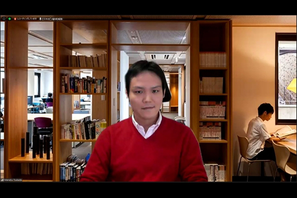

 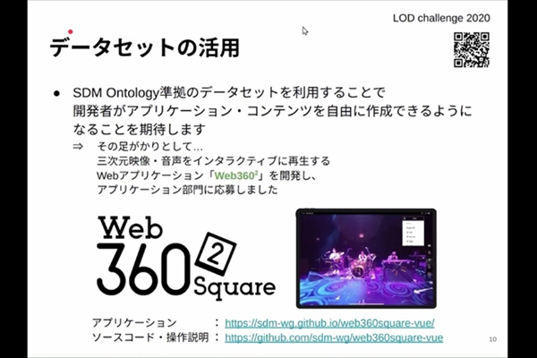
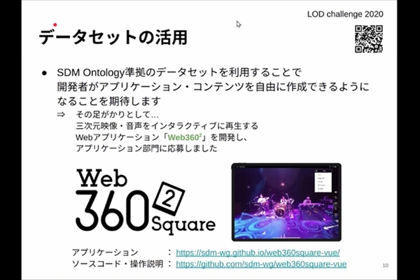
| |
| 審査講評 (最優秀賞) | 本作品は、音楽イベントの収録環境や編集・再生系に関する詳細なメタデータを、 SDMコンソーシアムで開発されたSDMオントロジーを基とするデータセットにまとめた意欲的な作品です。 その構造的正確さや表現力は、同LODを用いたアプリケーション部門応募作品の「Web360Square」からも窺い知れます。 音楽を楽曲としてだけでなくイベントの体験としても場所や時間によらず共有可能になるVR/MR時代のオープンデータが、 現在のような大勢で集まりにくい状況下でも日常をより豊かにしてくれそうです。 |

 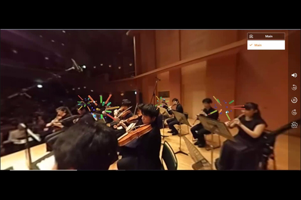
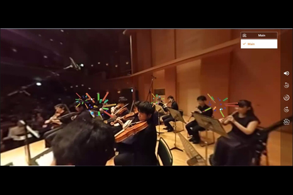
| |
| 審査講評 (オントロジー賞) | オントロジー研究者が予想もしない分野に果敢に取り組まれたことに敬意を表します。おそらく世界初でしょう。音楽ビジネス分野にこのオントロジーが広がることを期待します。 |
| 副賞 |
最優秀賞：賞金５万円 オントロジー賞：Amazon echo show |
部門賞： アイディア部門 優秀賞
| 作品名 | メタデータを用いたEnOceanプロトコルの汎用的変換 |
|---|---|
| 応募者名 | 前大道 浩之 |

 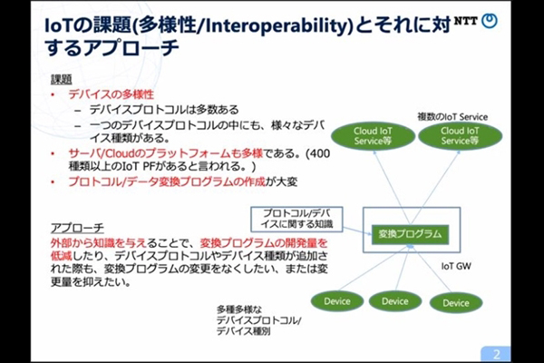
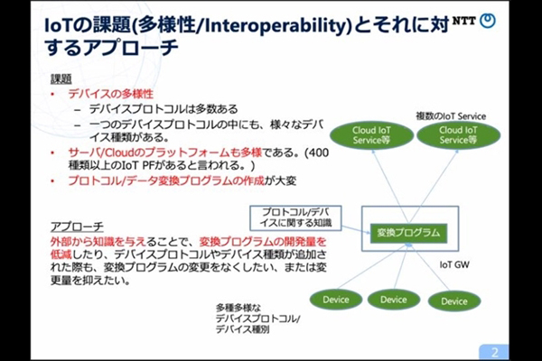

| |
| 審査講評 | 本作品は、特定のIoT機器群の送受信データのプロトコルを明確化するために、知識ベースとしてRDFの技術を利用するというアイデアです。仕様を明確化してデータを扱いやすくするというアイデアは開発者に優しいもので、ひいてはIoT機器データ自体のオープン性や互換性を高めることに繋がる可能性があると評価いたしました。ルールをオントロジー化すれば他の規格にも応用できる可能性もあり、今後の展開に期待しています。 |
| 副賞 | 賞金２万円 |
部門賞： データセット部門 優秀賞
部門賞： アプリケーション部門 優秀賞
| 作品名 |
データセット部門：
鉄道駅LOD
アプリケーション部門： 路線王 ～ 駅名だけで鉄道路線を当てるクイズゲーム ～ ／ 小倉百人一首クイズ |
|---|---|
| 応募者名 | uedayou |


| |
| 審査講評 (データセット部門) | 本作品は、全国の鉄道会社、路線、駅に関するデータを、名称や位置情報だけでなくDBpediaなどの様々なデータを組み合わせてLOD化したものです。個々の要素のデータをJSON-LDやTurtleなどで取得することができるため、アプリなどで活用しやすいデータセットです。今回、このデータを利用したクイズアプリやGeoJSON提供ツールなどの作品を応募することで、様々な視点からのデータ利用の可能性を示したことも高く評価いたします。 |
| 審査講評 (アプリケーション部門) | データセット部門優秀賞「鉄道駅LOD」を用いた日本全国の鉄道路線内の複数の駅名を順に提示することで路線名を当てるクイズ「路線王」と、そのクイズの出題の仕組を「小倉百人一首LOD」、「小倉百人一首LODの世界」とマッシュアップした「小倉百人一首クイズ」の両者を併せて高く評価しました。クイズとしてのエンターティメント性にはまだ工夫の余地はありますが、LOD形式のデータセットからマッシュアップによりクイズゲームが簡単に作成できる可能性を示していますので、今後、様々なデータセットから多様なクイズ作品が作成・公開されることを期待します。 |
| 副賞 |
データセット部門：賞金２万円 アプリケーション部門：賞金２万円 |
部門賞： アプリケーション部門 優秀賞
| 作品名 | PolityLink |
|---|---|
| 応募者名 | 薄井 光生 |
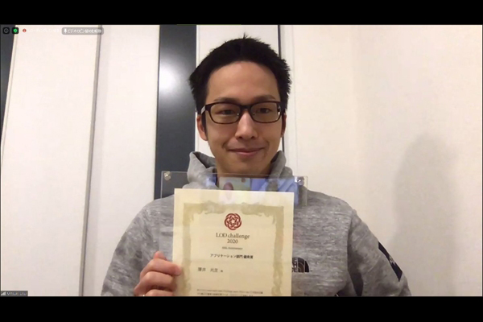
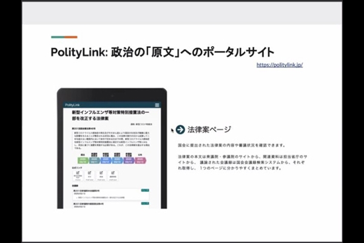
 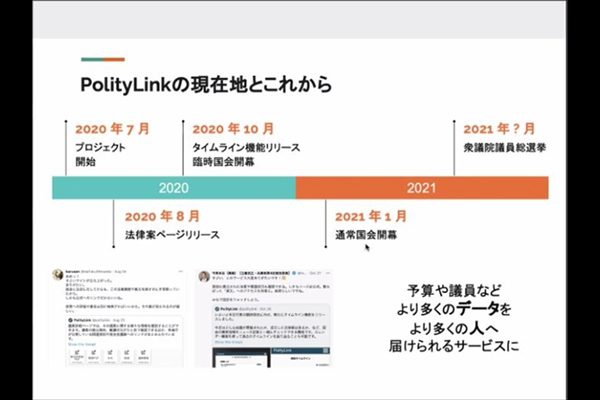
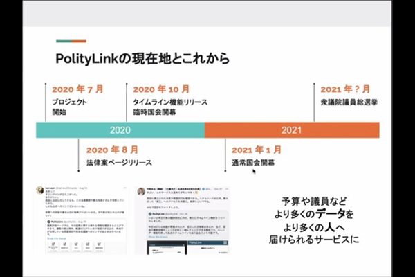
| |
| 審査講評 | 本作品は政治に関する一次情報を集約し、法律の成立過程や会議録をまとめて閲覧することができます。情報の提示方法が優れていることに加え、議会と行政を横断した情報の取りまとめを単一の公的機関に任せるのではなく、市民やメディアが率先していくあり方を提示している点を高く評価いたします。データはGraphQLでも提供されていることから、今後の外部連携にも期待します。 |
| 副賞 | 賞金２万円 |
部門賞： データ分析・可視化部門 優秀賞
| 作品名 | 新型コロナ感染6指標と要介護指数・高齢化率のメタ分析 |
|---|---|
| 応募者名 | 鴨川 威、花谷 修一、中山 圭太郎 |
 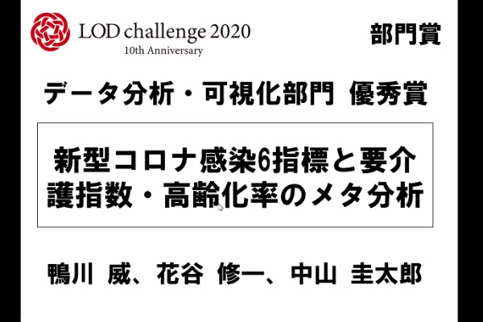
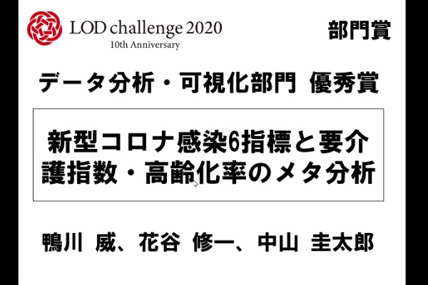


| |
| 審査講評 | 本作品は、新型コロナウイルス感染状況６指標や診療費、要介護認定者数などのオープンデータを用いて、相関分析により新型コロナウイルス感染重症度の影響を調査した作品です。複数のオープンデータを組み合わせて、現在の社会問題を独自の観点で多角的に紐解こうとするチャレンジを評価します。今後の展開に期待するとともに、検証可能なデータがオープンデータとして公開されることを期待します。 |
| 副賞 | 賞金２万円 |
部門賞： 基盤技術部門 優秀賞
スポンサー賞： インフォ・ラウンジ賞（インフォ・ラウンジ株式会社様より提供）
| 作品名 | LightRDF |
|---|---|
| 応募者名 | 小関 健太郎 |

 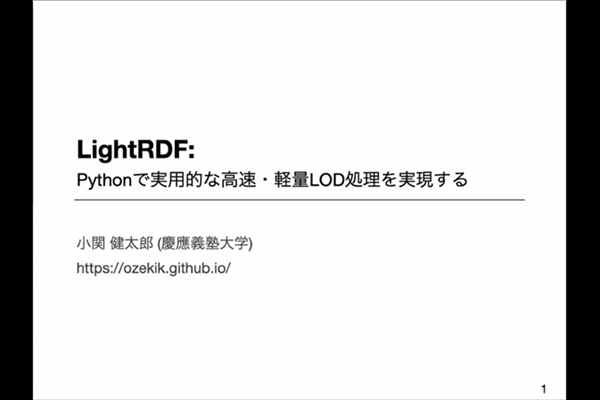
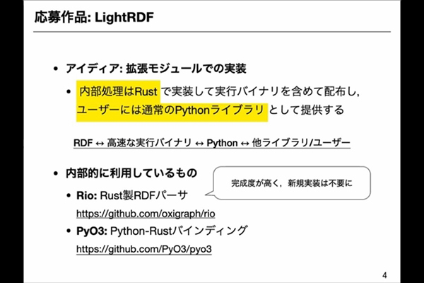
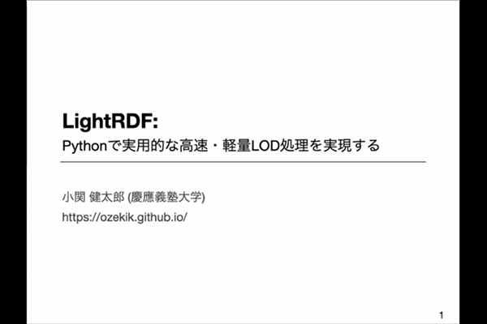
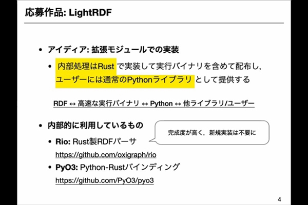
| |
| 審査講評(基盤技術部門 優秀賞) | 本作品は、Rust言語で書かれたRDFライブラリをPython言語で使えるようにしたラッパーのライブラリです。既存のライブラリのRDFLibと比べて、OWLファイルの解析が大幅に高速になったとのことです。PythonでRDFを処理する人たちにとって有用なライブラリとなるでしょう。また、Deep Learning等Pythonが主流の他分野の研究開発者をLODの分野に取り込むきっかけになるかもしれません。今後は更なる機能拡張を期待しています。 |
| 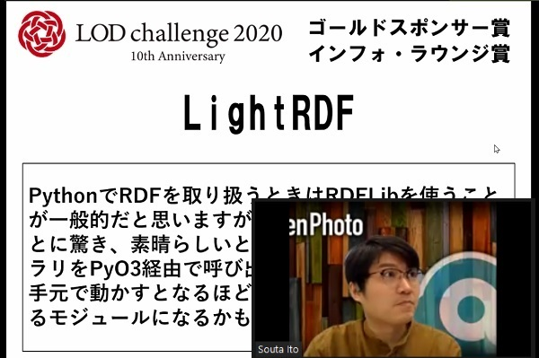 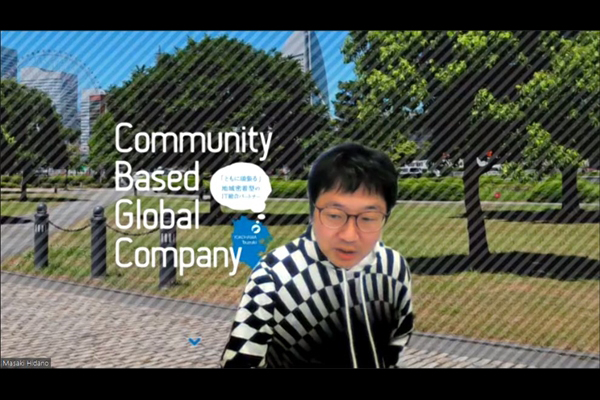 | |
| 審査講評(インフォ・ラウンジ賞) | PythonでRDFを取り扱うときはRDFLibを使うことが一般的だと思いますが、そこにチャレンジしたことに驚き、素晴らしいと感じました。RustのライブラリをPyO3経由で呼び出せることも目からうろこで、手元で動かすとなるほど高速です。世界で活用されるモジュールになるかもしれないと期待しています。 |
| 副賞 |
基盤技術部門 優秀賞：賞金２万円 インフォ・ラウンジ賞：ノベルティグッズ + α |
テーマ賞： LODコミュニティ賞
パートナー賞： 楽しくSPARQL賞（B Inc.様より提供）
| 作品名 | ☆ピコピコプラネット☆ SPACE |
|---|---|
| 応募者名 | ふみを |


| |
| 審査講評 (LODコミュニティ賞) | 本作品は、SPARQLクエリを手軽に投稿・共有できるWebサービスであり、さらに、SPARQLクエリへの評価やコメント追加などユーザ同士のコミュニケーションを促す機能も充実しています。既にさまざまな分野のデータセットのSPARQLクエリが多数投稿されており、今後さらに幅広く活用されることでLODを使用するコミュニティの発展に大きく貢献することを期待します。 |
| 審査講評 (楽しくSPARQL賞) | データ毎にばらばらなAPIではなく、一度覚えたらどこでも使えて便利なweb標準なAPI、SPARQL。ちょっととっつきにくいのが玉に瑕ですが、楽しいデータセットと動かして試せるコード集で克服できそう！GitHubのようにforkできるシクミも良いですね！地方自治体の5つ星オープンデータが詰まった、B Inc.のオープンデータプラットフォームでも活用させてもらいますっ。 |
| 副賞 |
LODコミュニティ賞：賞金５千円 楽しくSPARQL賞：ガチャピン・ムックとはじめる！プログラミングセット |
テーマ賞： LODプロモーション賞
| 作品名 | Google Cloud Platform の無期限無料枠を利用した Virtuoso の構築方法 |
|---|---|
| 応募者名 | 林 正洋 |
 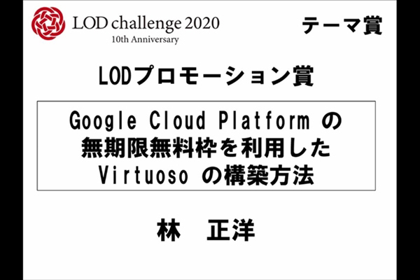
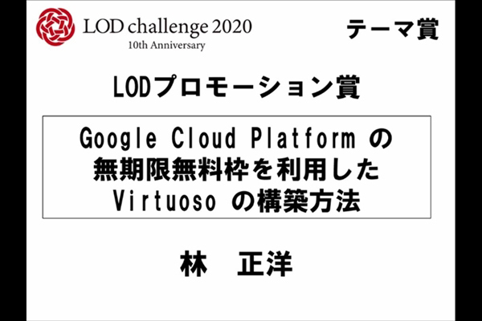


| |
| 審査講評 | クラウドサービスの無料枠内でトリプルストアを構築する方法の紹介記事です。内容はTips的なもので特に高度なものや複雑なものが含まれているわけではありませんが、無料なので誰でも気軽に試すことができ、LODの普及に資する作品として評価いたしました。本作品のようにユーザ目線で「ちょっと嬉しい」を実現する取り組みは、今後もぜひ継続していってください。 |
| 副賞 |
賞金５千円 |
テーマ賞： プログレス賞
| 作品名 | みんなで翻刻de小倉百人一首LOD |
|---|---|
| 応募者名 | 高橋 菜奈子、加納 靖之、橋本 雄太 |
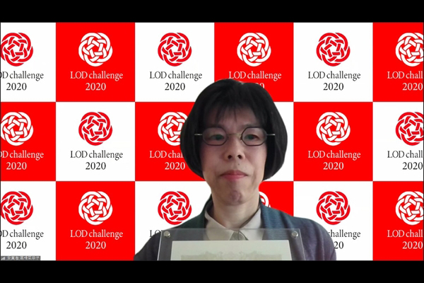
 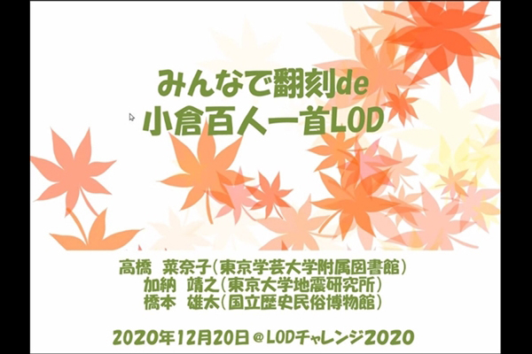
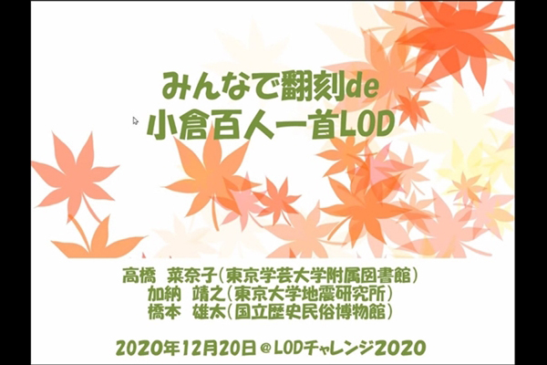

| |
| 審査講評 | 「小倉百人一首LOD」シリーズは毎年継続的に更新・拡張されており、今年は「みんなで翻刻」という市民参加型翻刻プラットフォームを利用して古文書史料の翻刻を進められました。クラウドソーシングサービスを活用して古文書のLODデータの幅を拡げるというチャレングな取り組みと共に、それを可能とした前年度までの継続的な取り組みを高く評価いたしました。 |
| 副賞 | 賞金５千円 |
テーマ賞： 地域振興LOD賞
| 作品名 | 失われた谷戸を求めて ～「谷戸のヨコハマ」データセット |
|---|---|
| 応募者名 | 小池 隆 |
 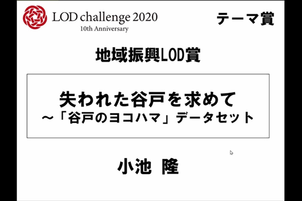
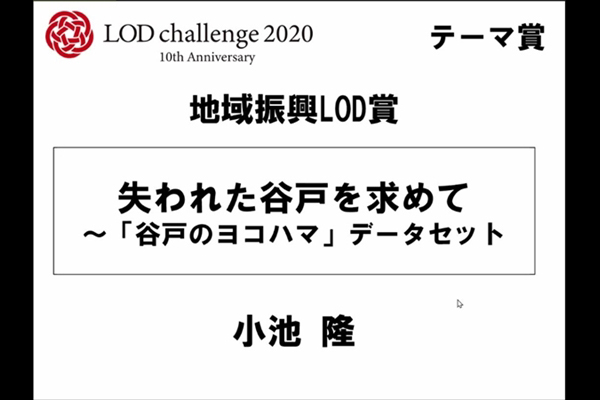


| |
| 審査講評 | 本作品は横浜の地域を「谷戸（やと）」という地形に着目して切り取ったデータセットです。古文献の情報などもリンクしており、その地域を地理と歴史の両面から見直すことができ、日常生活の中では気付かない魅力を再発見するための視座を示してくれているように感じました。ぶらりと現地の様子と合わせて楽しめるアプリや現地でのフィールドワークと組み合わせたり、さらには本作品をお手本として他の地域でも展開したりする豊かな発展形を想定でき、地域の振興にとっても重要な視点を与える作品として高く評価します。 |
| 副賞 | 賞金５千円 |
テーマ賞： 教育LOD賞
| 作品名 | デジタル書架LOD |
|---|---|
| 応募者名 | 東京学芸大学Moebius Open Library（MOL） |

 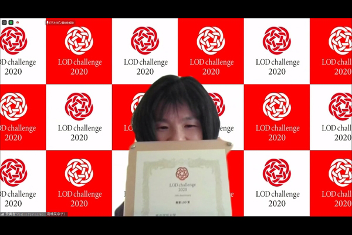
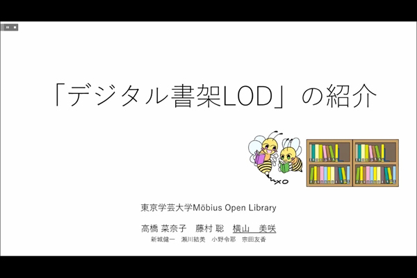
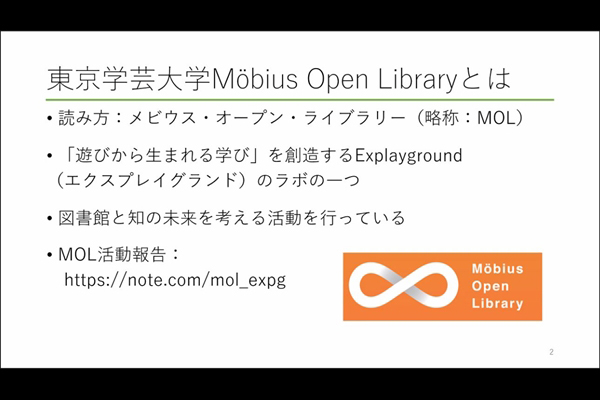
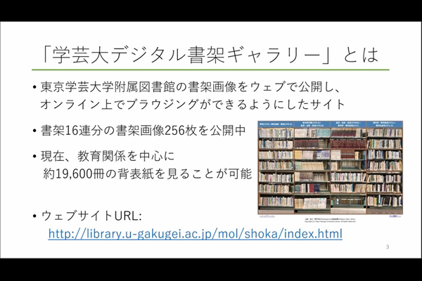
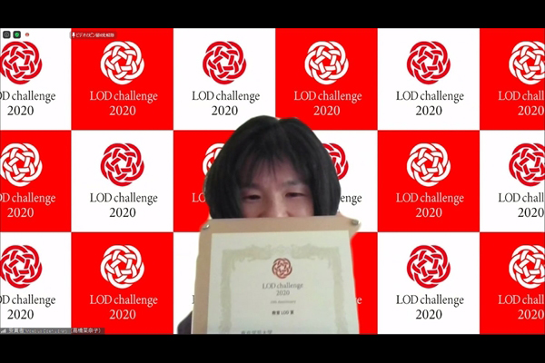
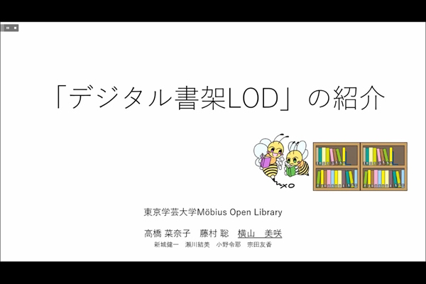
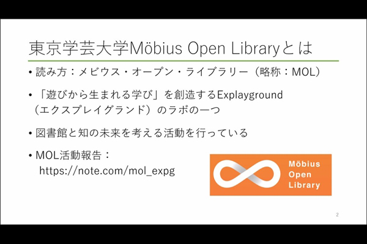
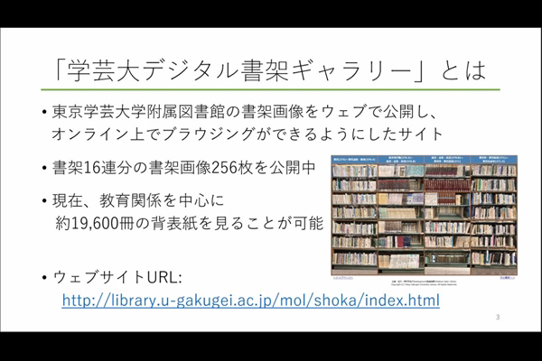
| |
| 審査講評 | 3D仮想空間のデジタル図書館は古くからありましたが、本作品では書架画像のメタデータがLOD化されており、そこに含まれるNDC分類へのリンクを用いて複数の図書館がオープンに繋がるというアイディアは素晴らしいです。既に3D書架が公開されており、コロナ禍の現在も自宅で図書館を散策できることに加え、継続的なデータ更新のためのマニュアル作りにも取り組まれているとのことですので、今後の発展がとても楽しみです。 |
| 副賞 | 賞金５千円 |
テーマ賞： ウィキデータ賞
| 作品名 | ウィキデータによる国内学校基礎情報の整備 |
|---|---|
| 応募者名 | 東 修作 |


 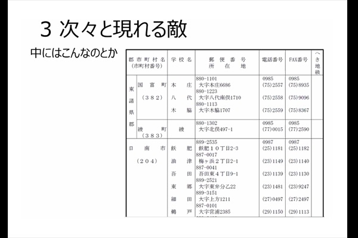
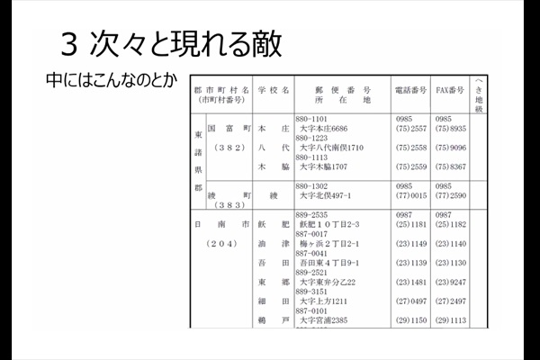
| |
| 審査講評 | 本作品はWikidataの内容を充実させる活動の一つとして国内の学校基礎情報の追加を行なっているものです。すでに小中高については80％超のデータが入っており充実しています。Wikidataはデータ活用、ことにLOD活用にとって重要なリソースになってきています。しかし、日本に関するデータはあまり充実していません。本作品はその点を補う重要な活動として高く評価します。 |
| 副賞 | 賞金５千円 |
テーマ賞： エンターテインメントLOD賞
| 作品名 | バーチャルシンガーによる楽曲LOD |
|---|---|
| 応募者名 | 雨森 美和 |


 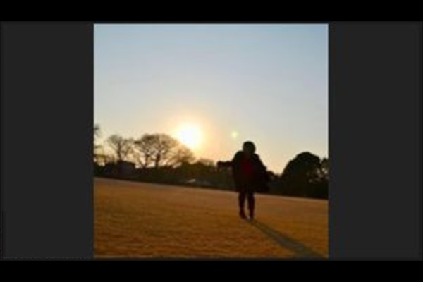
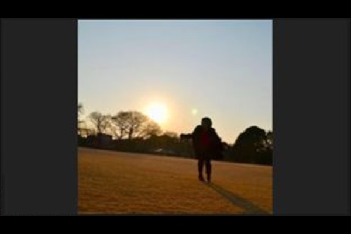
| |
| 審査講評 | 本作品は、動画投稿サイトで公開されたバーチャルシンガーの楽曲に関する情報をLOD化したものです。作者は昨年のカルチャーLOD賞に引き続きテーマ賞受賞となりましたが、今回はプログラム開発にも挑戦したとのことです。情報が整理されることにより、バーチャルシンガーの啓蒙につながることが期待されます。今後も、広く深くLODを作成し公開することを期待しています。 |
| 副賞 | 賞金５千円 |
テーマ賞： LODビジネス賞
| 作品名 | Open Photo |
|---|---|
| 応募者名 | インフォ・ラウンジ株式会社 |
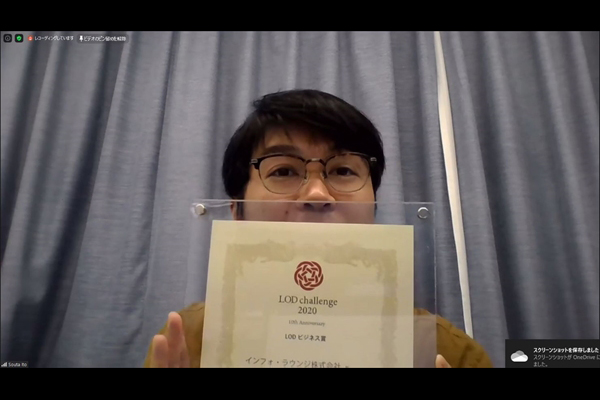

 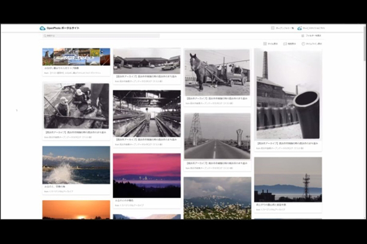
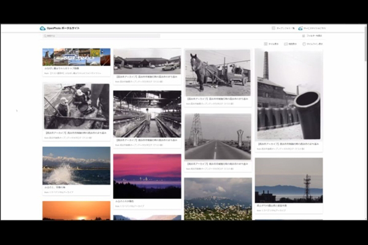
| |
| 審査講評 | 本作品は、手軽に写真を公開するためのプラットフォームです。ライセンスの指定ができることや、メタデータがschema.orgベースのJSON-LDで公開されるようになっているなど、オープンデータとして写真を公開することが意識されています。すでに主に自治体向けにビジネスをしているという点も評価できます。今後写真の情報をLODやIIIFでも公開されるとのことですので、さらなる発展を期待しています。 |
| 副賞 | 賞金５千円 |
学生奨励賞
| 作品名 | はこんだて （iOS版） （Android版） |
|---|---|
| 応募者名 | 公立はこだて未来大学 シビックテックチーム |
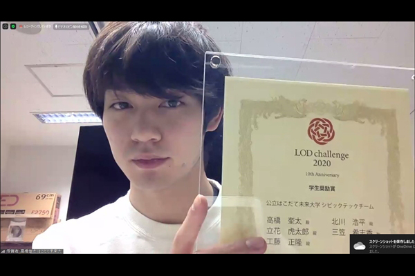

 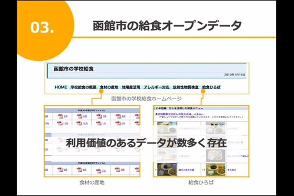
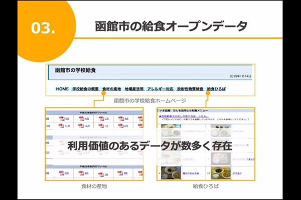

| |
| 審査講評 | 本作品は、函館市の中学校における献立表・学校で人気のレシピ・2100種類以上の食品データを提供するアプリです。わかりやすいユーザーインターフェースと函館市の学校給食や文部科学省が提供する日本食品標準成分表などのオープンデータを活用している点を評価します。アレルギー情報の考慮や他の市区町村への展開など、今後のさらなる活動の継続と発展を期待します。 |
| 副賞 | 賞金５千円 |
学生奨励賞
| 作品名 | ズームインジョブ |
|---|---|
| 応募者名 | キッズコネクション |
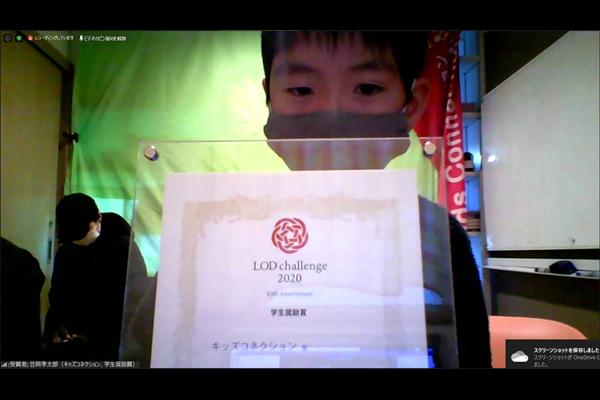


| |
| 審査講評 | 本作品は、子ども向けに制作された職業インタビュー動画集であり、1.職業の特徴、2.今後の目標、3.子ども達へ一言の３部構成になっています。学生・社会人の混合チームで継続的に動画制作が進められており、また、誰でも動画を閲覧できる点を評価します。今後のさらなるご発展とLODによる情報拡充を期待します。 |
| 副賞 | 賞金５千円 |
LODチャレンジ2020実行委員挨拶、活動報告等
実行委員長の古崎より開会のご挨拶及び活動報告を、審査委員長の武田より閉会のご挨拶を行いました。

 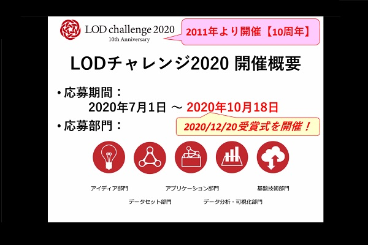
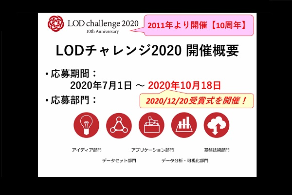

関連イベント案内
受賞作品のデモ共有
休憩時間に、実行委員が受賞作品のデモを行い、その画面を参加者に共有しました。
【デモ実施作品】
・超臨場SDM方式収録データセット
※上記データセットを使った作品「Web360Square」のデモ
・鉄道駅LOD
・路線王 ～ 駅名だけで鉄道路線を当てるクイズゲーム ～
・小倉百人一首クイズ
・☆ピコピコプラネット☆ SPACE
・はこんだて （iOS版） （Android版）
・ズームインジョブ
・バーチャルシンガーによる楽曲LOD
【デモ実施作品】
・超臨場SDM方式収録データセット
※上記データセットを使った作品「Web360Square」のデモ
・鉄道駅LOD
・路線王 ～ 駅名だけで鉄道路線を当てるクイズゲーム ～
・小倉百人一首クイズ
・☆ピコピコプラネット☆ SPACE
・はこんだて （iOS版） （Android版）
・ズームインジョブ
・バーチャルシンガーによる楽曲LOD
オンライン交流会
プログラム終了後に同Zoom会議室にて交流会が催されました。データ活用等に関する活発な意見交換が行われ、参加者相互の親睦を深めていただきました。
おわりに
LODチャレンジは、2011年に国内初の全国規模のオープンデータコンテストとして開催され、以後毎年ほぼ同様の形で継続し、今回で10回目の節目を迎えることができました。ご参加頂いた皆様、そして開催を支えて頂いた皆様に心よりの感謝を申し上げます。
さて今回のLODチャレンジ2020は、新型コロナウイルスの感染拡大防止のため、例月の実行委員会をはじめ、キックオフや授賞式のイベントをすべてオンラインで実施するという初の試みとなりました。 すべてが初めての経験であり上手に段取りできなかった場面もありましたが、これまでに培ったデータ活用の技術や経験を活かしこの難局を乗り切ることができました。新たな多くの知見を得ることもできました。 私たちコンテストの運営側にとっても、まさに「チャレンジ」の一年になったと実感しております。
一方、応募していただいた作品に目を向けると、このコロナ禍の渦中にありながら応募総数は昨年度とほぼ同数の67作品、そのうえ、個々の作品の技術やアイディアの質が高く洗練されているものが多いと感じました。 特に最優秀賞の作品は頭一つ飛び抜けており、あたかも我が国のLOD技術活用の進展の歴史を示すようで非常に感慨深いものがあります。
新型コロナウイルスの流行や少子高齢化社会の到来など、我が国の抱える社会課題は山積しており先の見えづらい昨今ではありますが、これまでのLODチャレンジで育まれたデータ活用の技術やアイディア、そして何よりチャレンジする気持ちが、明るい未来を切り開いていく礎となると信じております。 これからも引き続き、応募者としてのご参加や、運営を支える実行委員として、LODチャレンジへのご支援ご協力をよろしくお願いいたします。
さて今回のLODチャレンジ2020は、新型コロナウイルスの感染拡大防止のため、例月の実行委員会をはじめ、キックオフや授賞式のイベントをすべてオンラインで実施するという初の試みとなりました。 すべてが初めての経験であり上手に段取りできなかった場面もありましたが、これまでに培ったデータ活用の技術や経験を活かしこの難局を乗り切ることができました。新たな多くの知見を得ることもできました。 私たちコンテストの運営側にとっても、まさに「チャレンジ」の一年になったと実感しております。
一方、応募していただいた作品に目を向けると、このコロナ禍の渦中にありながら応募総数は昨年度とほぼ同数の67作品、そのうえ、個々の作品の技術やアイディアの質が高く洗練されているものが多いと感じました。 特に最優秀賞の作品は頭一つ飛び抜けており、あたかも我が国のLOD技術活用の進展の歴史を示すようで非常に感慨深いものがあります。
新型コロナウイルスの流行や少子高齢化社会の到来など、我が国の抱える社会課題は山積しており先の見えづらい昨今ではありますが、これまでのLODチャレンジで育まれたデータ活用の技術やアイディア、そして何よりチャレンジする気持ちが、明るい未来を切り開いていく礎となると信じております。 これからも引き続き、応募者としてのご参加や、運営を支える実行委員として、LODチャレンジへのご支援ご協力をよろしくお願いいたします。
LODチャレンジ2020実行委員会
本件に関するお問い合わせ先
Linked Open Data チャレンジ 2020 実行委員会 事務局office@lodc.jp